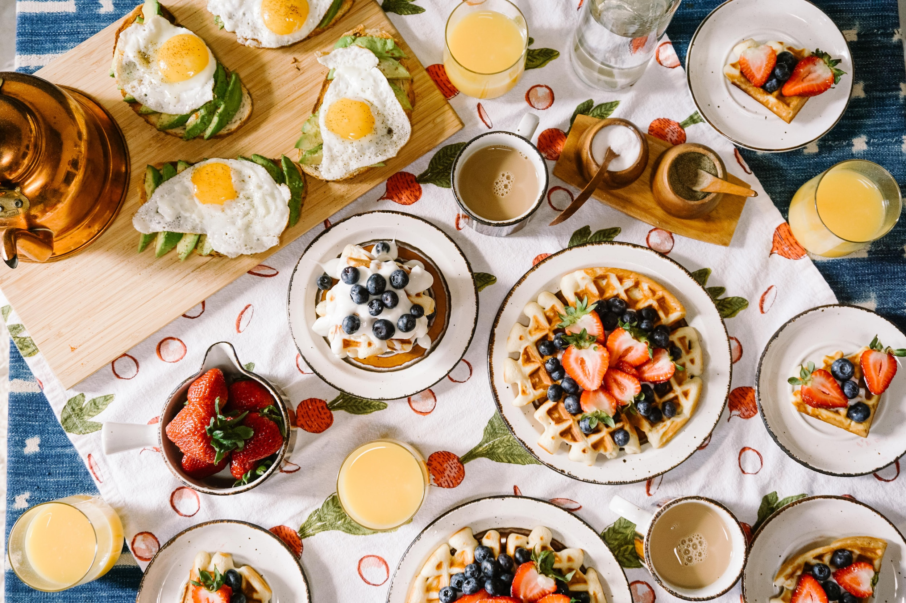
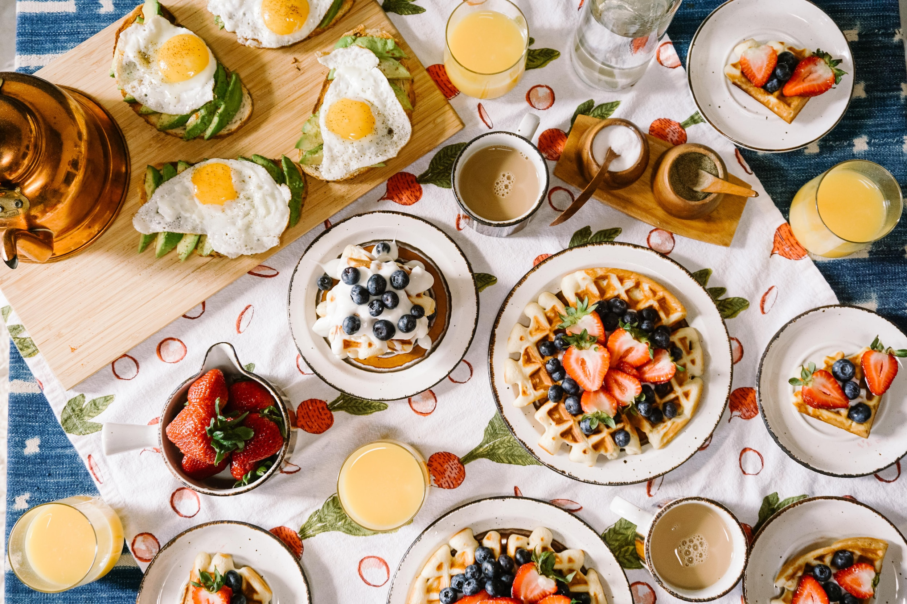

Inspire-se, cozinhe com paixão e saboreie momentos inesquecíveis à mesa.
Receitas mais procuradas
Waffles
Receita bacana pra comer com os amigos de manhã
Ver ReceitasPanquecas
Receita bacana pra comer com os amigos de manhã
Ver Receitas
Chocolate Quente
Receita bacana pra comer com os amigos de manhã
Ver ReceitasReceitas Recentes

Cereal Matinal
Cereal crocante e saboroso, perfeito para um café da manhã ou lanche rápido. Uma opção deliciosa e nutritiva para começar o dia com energia.
Ver ReceitasCookies
Cookies caseiros irresistíveis com massa macia e pedaços generosos de chocolate.
Ver Receitas